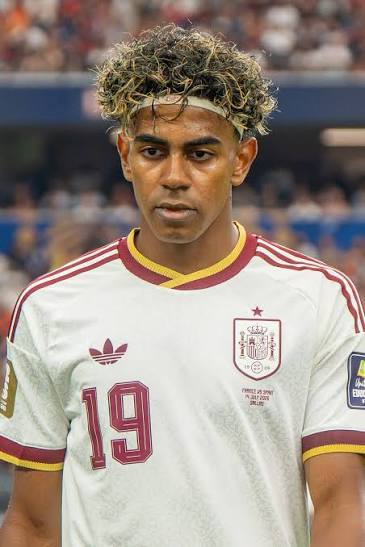
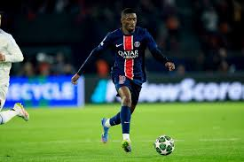
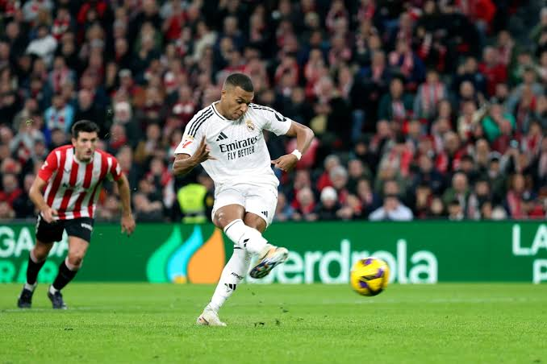
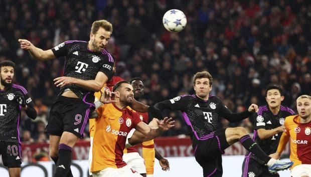
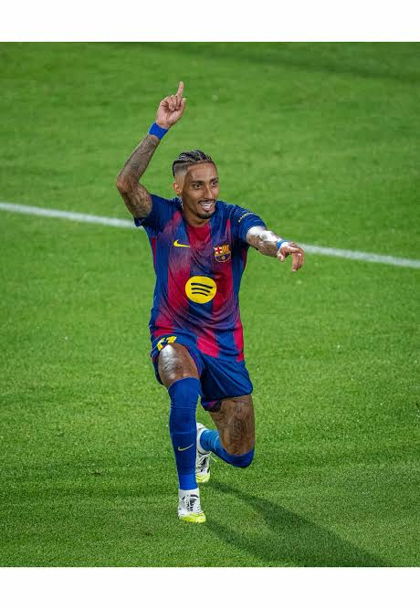

Joven talento con un regate y una visión de juego fuera de lo común
Estos son los jugadores que, según nuestro criterio, aspiran al Balón de Oro. Pasa por cada uno de ellos y compara antes de ver nuestra predicción

Joven talento con un regate y una visión de juego fuera de lo común

Velocidad, desborde y mucho peso en los partidos importantes.

Un goleador letal a campo abierto y en el área

Delantero completo: marca goles y tambień genera juego para el equipo.

Combina trabajo defensivo, asistencias y goles desde la banda.